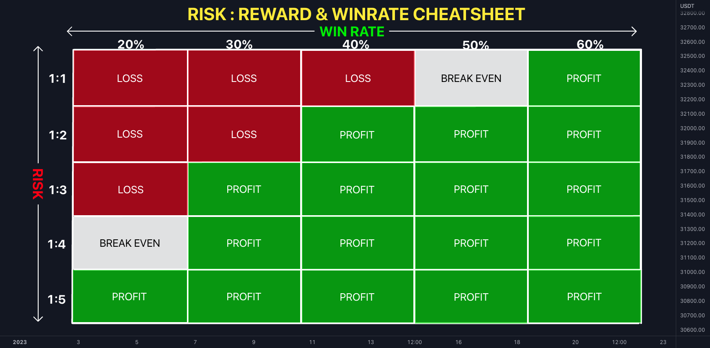

HTML>
TRADING
Mario Alejandro Alvarez Martinez
¿PARA QUÉ SIRVE LA GESTIÓN DE RIESGO?
La gestión de riesgo consiste en la utilización de la relación matemática positiva, lo que nos dice que para generar
ganancias basándonos en probabilidad de ganancia tenemos que buscar trades que nos den mínimo 3 veces de ganancia lo que
arriesgamos al entrar a la operación en nuestro Stop Loss, ya que así teniendo un 30% de efectividad dentro
de nuestras operaciones totales estaríamos ganando dinero. El objetivo de un trader es buscar un momento del día
para operar, analizar lo que ve y entrar en 2 operaciones máximo por día, ampliar su conocimiento al estar
dentro del mercado y mejorar el ratio-riesgo-beneficio, ya que esto permite que seamos rentables con menor
efectividad o aumentar el porcentaje que ganamos mensualmente.
